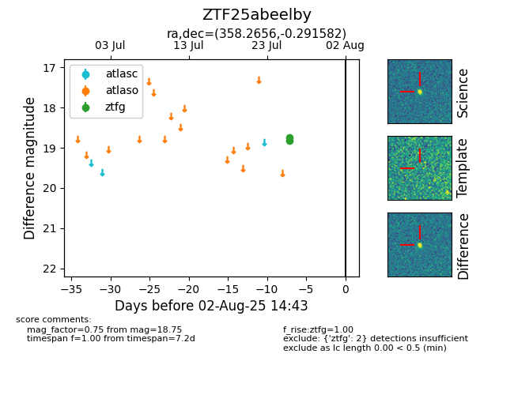

Target ZTF25abeelby at 2025-08-02 14:43, see:
FINK: fink-portal.org/ZTF25abeelby
Lasair: lasair-ztf.lsst.ac.uk/objects/ZTF25abeelby
ALeRCE: alerce.online/object/ZTF25abeelby
alt names
ZTF25abeelby (ztf,fink)
coordinates:
equatorial (ra, dec) = (358.2656,-0.29158)
galactic (l, b) = (92.9504,-59.72128)
photometry
last ztfg=18.75
2 ztfg detections
